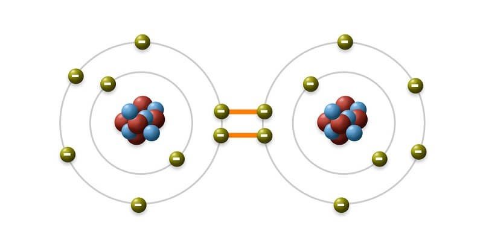

Crystallization
| Vietnamese | — |
|---|---|
| English | Crystallization |
| Pronunciation | /ˌkrɪstəlaɪˈzeɪʃən/ |
| Word type | noun (as labelled in the PDFs) |
Topic 2 — Meaning (Vietnamese)
Not separately specified in the PDF transcription.
Meaning (English)
A method of purifying a solid by forming crystals from a solution./ Phương pháp tinh chế chất rắn bằng cách tạo tinh thể từ dung dịch.
Example
Crystallisation produces pure crystals of an organic compound.
Images from the PDFs

